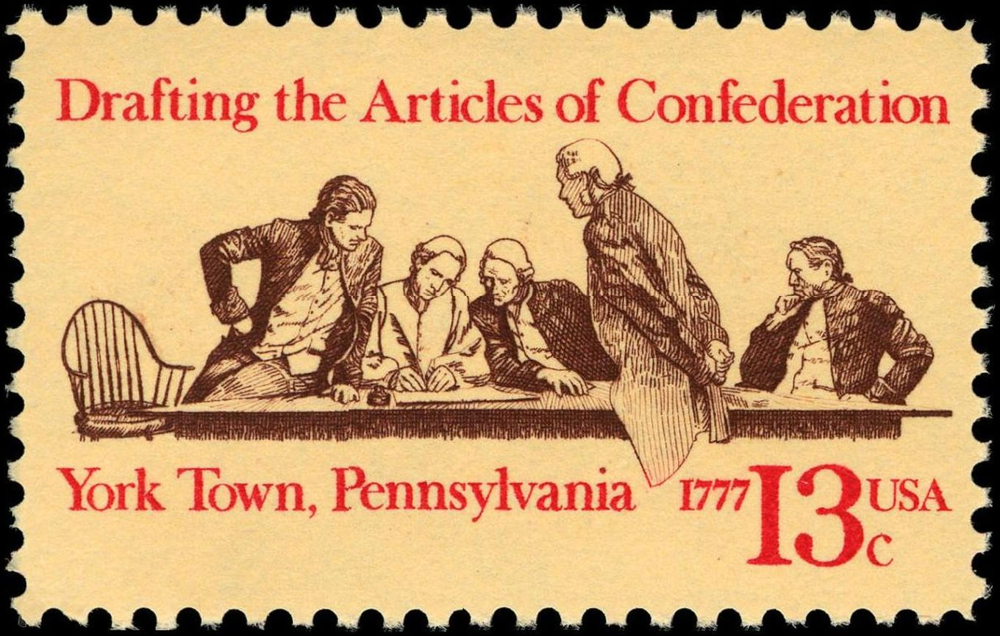
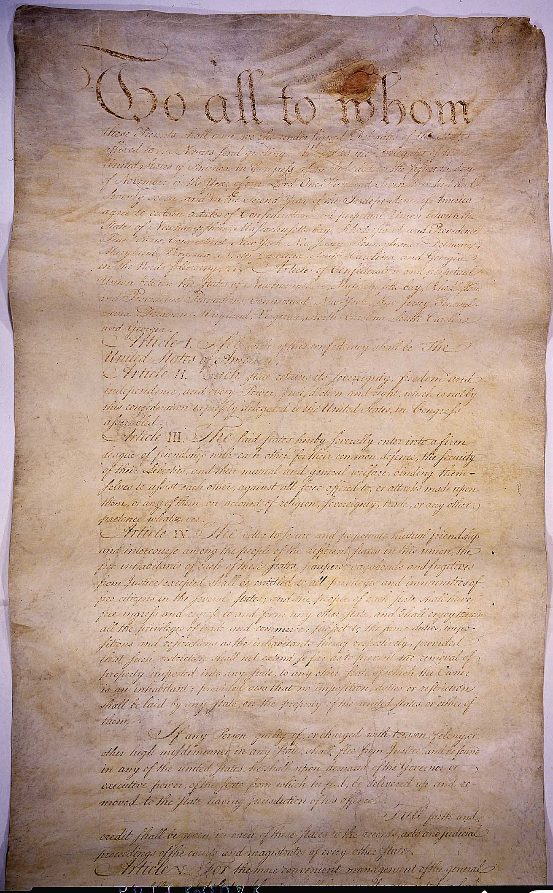
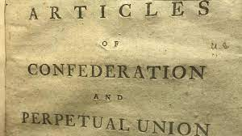

The Articles of Confederation was the first constitution of the United States
- Why was it created?
- How did it work?
- Why did it fail?
- How did this affect people's lives?
Creation of the Articles of Confederation

The Articles of Confederation were written to limit what the government could do and how it could do it without a crown.
The government may have been limited too much, however, as we will get here.
How the Articles of Confederation Worked

The articles gave states the right to do whatever they wanted unless it went against the constitution, and states were allowed to fund congress.
Congress was to fund and regulate the "Continental Army", however, this was short-lived as congress couldn't afford to pay for it.
Congress's power was quite limited. For example, Congress could make decisions, but not enforce them.
The central government was unable to directly tax the citizens, but it could request money from states.
Because states were super separated different states handled things quite differently and it was quite chaotic.
Why the Articles failed

The articles of confederation prevented the central government from taxing its citizens, so it had little to no money.
The central government was supposed to run the Continental Army, but congress could not afford to keep it afloat.
Congress could request money from states, but states were by no means required to pay up.
The majority of the money the central government had was spent on foreign relations, and because the U.S. owed lots of money to France from the war, that's where most of the money went.
Because the government had little money, it was unable to pay back the money owed to the people who fought in the revolutionary war. The army was had little food, and many people deserted.